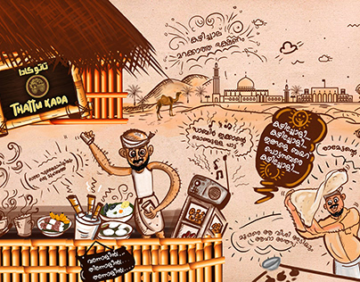

According to Samosapedia, a thattukada is described as 'Covered carts on the roadsides which sell the street food of Kerala. There is a common belief that Kerala is all about curry, coast and coconut. However, that is not completely true. Even when it comes to food, Kerala lives up to the title 'God's Own Country. 